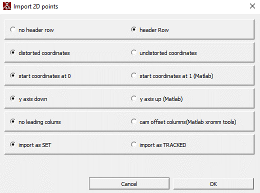

Usage Guide
There are two ways to use this package. You can either:
- Follow the usage guide below to run everything locally.
- Use the colab_tutorial.ipynb Jupyter Notebook and an online computing platform like Google Colab
- If you are using this option, be sure to make a copy of the notebook before using it so that you can save your changes!
Getting started and creating a new project
- If you haven't already, follow the steps in the installation guide to install this package!
- Activate your conda environment
- Open an interactive Python session
- From the terminal, run the following commands (replacing
/path/to/project-folderwith the path to the folder for your project andSDwith your initials):from deepxromm import DeepXROMM working_dir = '/path/to/project-folder' experimenter = 'SD' deepxromm = DeepXROMM.create_new_project(working_dir, experimenter)- Optionally, you can change the way your input data is fed into DeepLabCut to create one network per camera view (
per_cam) or blend the grayscale videos into an RGB video (rgb) by specifying the "mode" parameter. For example, for per_cam: - Keep your Python session open. We'll be running more commands here shortly
- Optionally, you can change the way your input data is fed into DeepLabCut to create one network per camera view (
- You should now see something that looks like this inside of your project folder:
Exporting your data from XMAlab in a usable format
- For now, DeepXROMM only supports analyzing full distorted videos (.avi). However, we understand that many labs use distorted .tif or .jpg stacks and plan to add support for these in a later release
- Along with your distorted videos, DeepXROMM expects CSV training data (XMAlab 2D points) exported with the following settings

Importing your data and loading the project
- The simplest approach is to create a new folder inside of the trainingdata folder named after your trial and place your raw videos, as well as distorted 2D points from tracking, in the folder.
- There are also a number of options for customization in the project_config.yaml file. Check out the config file reference to learn more about what each variable does
- After you have added the trainingdata and/or trial folders, make sure to load the project. You should also reload it every time you update any settings.
Training the project
- To start training your network, run the following in your Python terminal
Using a trained network to track your trial(s)
- Make sure any trials that you want to analyze are in appropriately named folders in the
trialsdirectory, and each folder contains a CSV and distorted cam1/cam2 videos that are named folder_name.csv, folder_name_cam1.avi, and folder_name_cam2.avi, respectively - Run the following commands in your Python terminal:
- This will save a file named trial_name-Predicted2DPoints.csv to the it# file (where number is the number next to iteration: in your project_folder/project-name-SD-YYYY-MM-DD/config.yaml file) inside of your trials/trial_name folder
- You can analyze the network's performance by importing this CSV as a 2D Points file into XMAlab with the following settings

Using autocorrect()
This package comes pre-built with autocorrect() functions that leverage the same image filtering functions as XMAlab, and use the marker's outline to do centroid detection on each marker. You can modify the autocorrect function's performance using the image processing parameters from the config file reference. You can also visualize the centroid detection process using the test_autocorrect() parameters.
Testing autocorrect() parameters on a single marker/frame combination
You'll need a Python environment that is capable of displaying images, like a Jupyter Notebook, for these steps
- Go to your project_config.yaml file and find the "Autocorrect() Testing Vars" section of the config
- Change the value of test_autocorrect to true by replacing the word "false" with the word "true", like this:
- Specify a trial (trial_name), camera (cam), frame number (frame_num), and marker name (marker) to test the autocorrect function on
- Import the package and initialize a deepxromm instance as a above and run the following code snippet
- Tune autocorrect() settings until you are satisfied with the testing output
Using autocorrect for a whole trial
- If you tested autocorrect, set the test_autocorrect variable in your config file to false
- Import the package and initialize a deepxromm instance as a above and run the following code snippet
- This will save a file named trial_name-AutoCorrected2DPoints.csv to the it# file (where number is the number next to iteration: in your project_folder/project-name-SD-YYYY-MM-DD/config.yaml file) inside of your trials/trial_name folder
- You can analyze autocorrect's performance by importing this CSV as a 2D Points file into XMAlab with the following settings